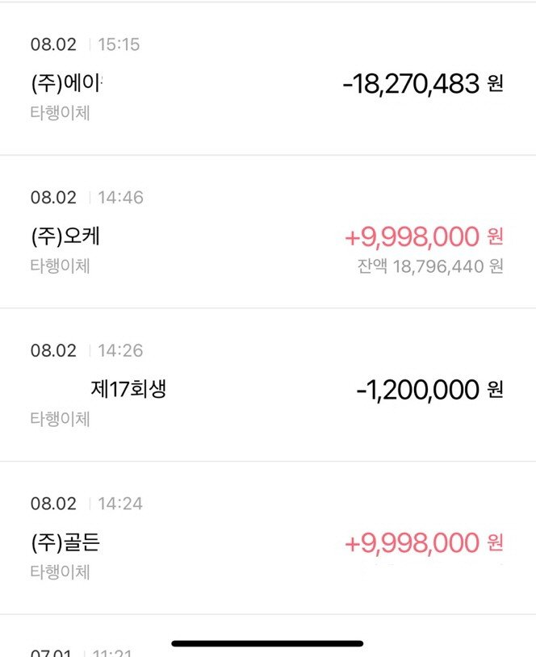

[개인회생자대출] 최규열 이사님 대환 대출 후기 감사합니다
저는 현재 개인회생 60회중 52회 납 4회 미납 월 30만 변제
연봉 5천 얼마전까지 대출이 5천 5백만 이었습니다
있는돈 다 털어서 3천 5백 완납 배우자 1천 300백만 완제 했습니다
저 대출이 자동차 담보로 하나만 남았는데 이율이 24% 라서
완납 했던곳 다시 이용하여 20% 대환 하였습니다
여유자금은 필요가 없어서 자동차 담보 완납 회생 미납 완납 했더니
50만원 남았네요
미납이 있어 저축은행은 안되서 3개월 뒤에 저축은행 진행 해주신다고 하셨네요
회생도 이제 거의 끝나가서 3개월뒤 저축은행 진행하고 회생 끝나면 다른곳 알아보려고 합니다
도움 주셔서 감사합니다
